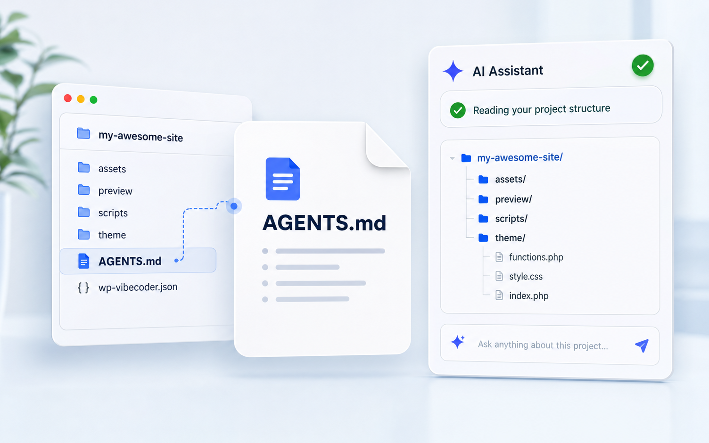
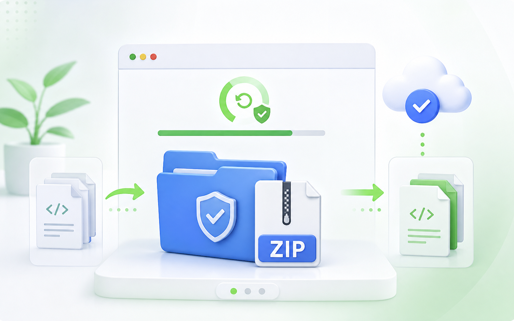
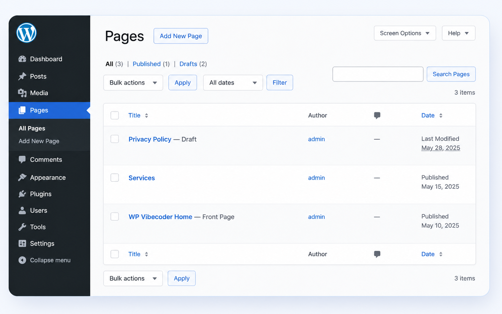

01
Setup
Install the plugin, authorize GitHub permissions, and optionally download the starter theme ZIP to review or customize locally.
Connect your repo, work with AI agents like Codex or Claude, and sync validated changes to WordPress with backups, preview, and one-click updates.
1 <header class="site-header">
2 <div class="container">
3 <a href="/" class="logo">
4 <img src="logo.svg" />
5 </a>
6 </div>
7 </header>
Fast. Safe. Powered by AI.
Learn morePlugin walkthrough
Install the plugin, authorize GitHub permissions, and optionally download the starter theme ZIP to review or customize locally.
Name the project and let the plugin create a starter repository, or connect an existing GitHub repo by pasting its link.
Open the repository branch in Visual Studio Code, Codex, Claude, Cursor, or the AI workspace you prefer.
The agent reads the project structure, edits the theme and preview, and can run the bundled scripts to generate the final screenshot.
After the commit is pushed, WP Vibecoder detects the update automatically. Press Sync to import the latest theme.
Activate the imported WordPress theme once validation, backup, and installation have completed.
The synced theme is live in WordPress, with the new homepage and managed pages.
Your agent, your workflow
Controlled sync

Each repo includes AGENTS.md so your AI agent understands the expected WordPress theme structure before editing.

A ZIP backup is created before replacing managed theme files during sync.

Ask the agent to create native WordPress pages, then use them with SEO plugins and the rest of your WordPress stack.
More native WordPress compatibility is coming in future versions.
First release
{kind=link}
{kind=link}
{kind=link}
{kind=link}
{kind=link}
{kind=link}
{kind=link}
{kind=link}